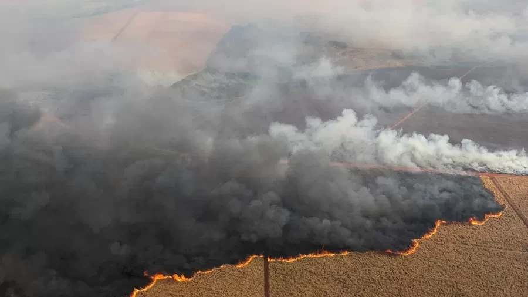
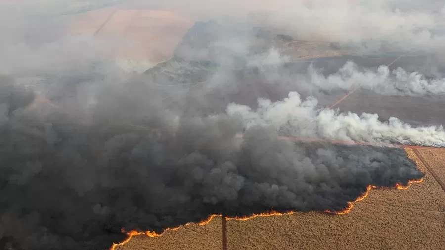

BRASIL
EM
CHAMAS
.jpg) 

QUEIMADAS
Em 2024, as queimadas no Brasil continuam sendo uma questão ambiental crítica, especialmente na Amazônia e no Cerrado. Muitas são ilegais e motivadas por atividades agropecuárias, agravadas por um clima seco e práticas inadequadas. Esses incêndios não apenas destroem habitats e biodiversidade, mas também contribuem significativamente para a emissão de gases de efeito estufa, impactando o clima global. O governo tem implementado algumas políticas para combater as queimadas, mas a eficácia varia e a fiscalização é um desafio. Organizações não governamentais e movimentos sociais estão cada vez mais engajados na defesa do meio ambiente, buscando soluções sustentáveis e conscientização. Em resumo, as queimadas permanecem uma preocupação constante, exigindo esforços contínuos de conservação e proteção dos ecossistemas brasileiros.
- Amazônia Causas: Desmatamento ilegal, expansão agrícola e pecuária. - Cerrado Causas: Queimadas para limpeza de áreas agrícolas e pastagens. - Pantanal Causas: Queimadas naturais e atividades agropecuárias, agravadas por períodos de seca. - Mata Atlântica (especialmente em áreas de serra) Causas: Desmatamento para construção e agricultura, além de incêndios acidentais. - Região Sul (especialmente em áreas rurais) Causas: Queimadas para renovação de pastagens e manejo agrícola.
Destruição de habitats e biodiversidade Aumento das emissões de gases de efeito estufa Deterioração da qualidade do ar Alterações climáticas regionais Impactos negativos na saúde humana Perda de solos férteis e degradação ambiental
PREVENÇÃO
1- Educação e conscientização: promover campanhas de conscientização sobre a prevenção de incêndios em escolas e comunidades e realizar treinamentos sobre como agir em caso de incêndio. 2- Limpeza de áreas verdes: manter a limpeza de matas e terrenos, removendo folhas secas, galhos e materiais inflamáveis e incentivar a prática de queima controlada, quando apropriado, sob supervisão de autoridades competentes. 3- Uso responsável do fogo: proibir queimadas em períodos de seca e aumentar a fiscalização, além de incentivar a população a relatar focos de fogo e queimadas ilegais. 4- Manutenção de equipamentos: realizar a manutenção regular de equipamentos elétricos e sistemas de aquecimento para evitar curtos-circuitos e instalar detectores de fumaça em residências e estabelecimentos comerciais. 5- Infraestrutura de combate a incêndios: melhorar a infraestrutura de combate a incêndios, como acessos para veículos de emergência e hidrantes em áreas urbanas e rurais, e investir em brigadas de incêndio e treinamento para voluntários.
6- Monitoramento e tecnologia: utilizar drones e satélites para monitorar áreas de risco e detectar focos de incêndio precocemente, implementando aplicativos de denúncia de incêndios e queimadas. 7- Reflorestamento e gestão de florestas: incentivar projetos de reflorestamento para aumentar a biodiversidade e reduzir a propensão a incêndios, além de adotar práticas de manejo sustentável em áreas florestais. 8- Regras e normas: reforçar a legislação relacionada ao uso do fogo e às responsabilidades de proprietários de terrenos e promover parcerias entre governo, ONGs e comunidades para implementar ações de prevenção. 9- Preparação da comunidade: criar planos de emergência comunitários que incluam rotas de evacuação e locais seguros, organizando simulações e exercícios para preparar a população para situações de emergência. 10- Clima e condições naturais: monitorar as condições climáticas e alertar a população sobre períodos de alta risco de incêndio, além de incentivar a adaptação das práticas agrícolas e de uso do solo em resposta às mudanças climáticas.